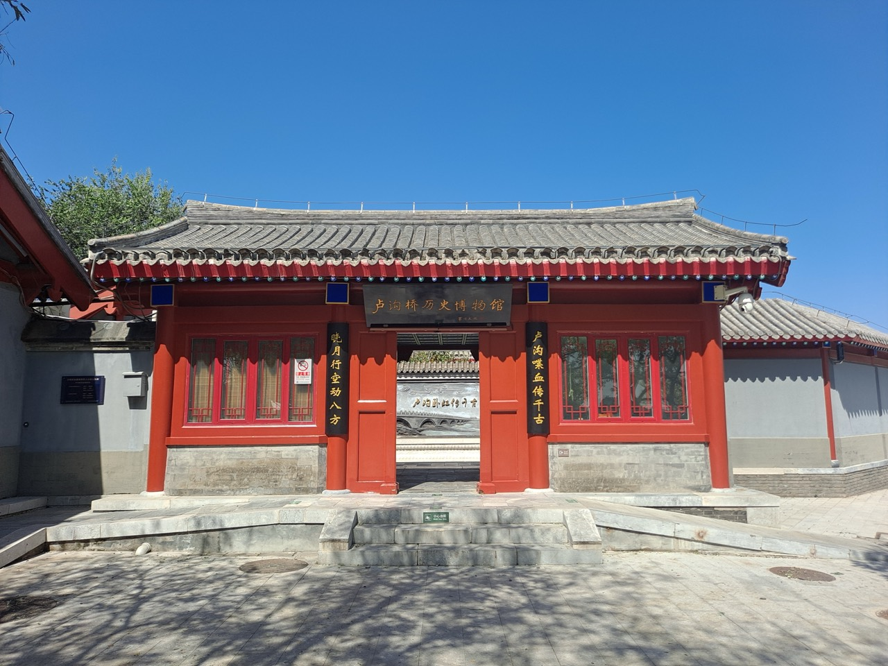
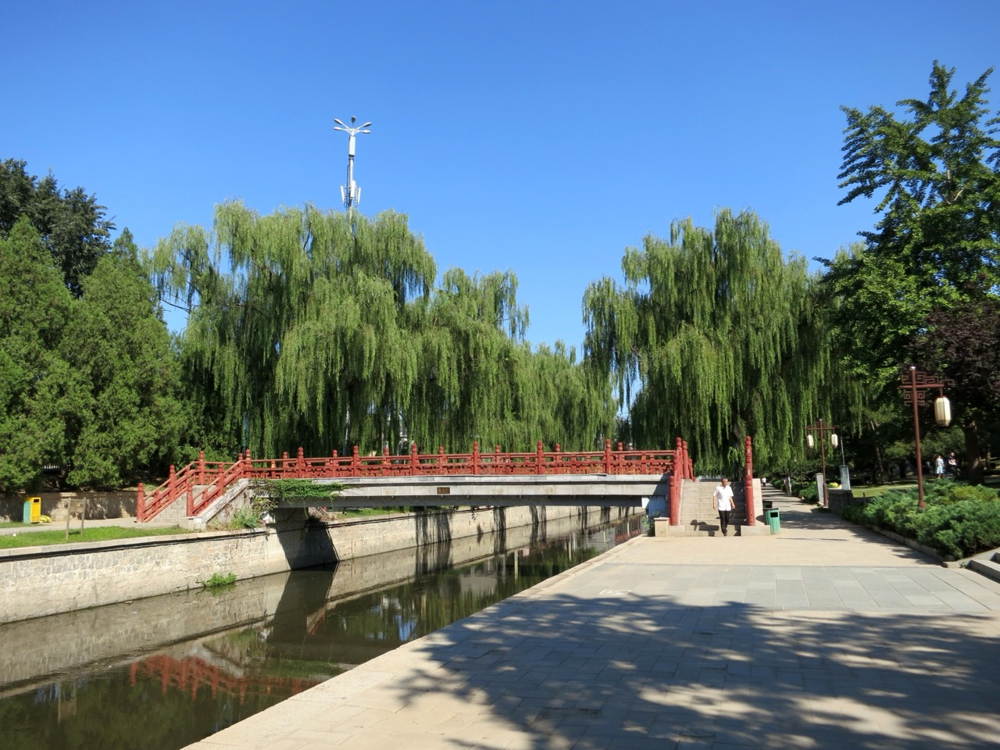
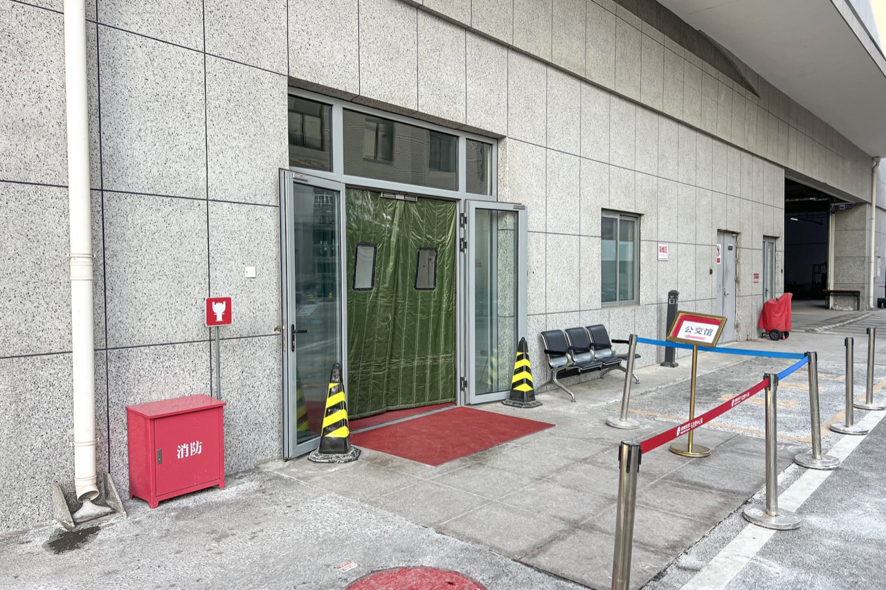
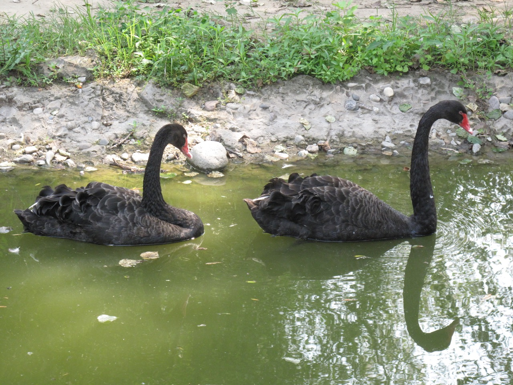

卢沟桥历史博物馆

作品：Lugou Bridge Museum 1.jpg
摄影：H2v5o68z
拍摄日期（来源声明）：2025-09-14

2025年卢沟桥历史博物馆历史影像，主体为院落建筑外观；不代表场所全貌、现行陈列、季节或开放状态。
由来源原图等比例缩小，并进行JPEG压缩（质量参数72）；未裁切、重绘、去人物或换背景。成品为1280×960。页面按容器缩放、裁显；完整原图见来源。
照片及机械处理结果沿用各自标注的许可。保留原构图，仅按下列说明缩小和压缩。历史影像不代表当前开放、展览或季节；摄影者不因此为小程序背书。

作品：Lugou Bridge Museum 1.jpg
摄影：H2v5o68z
拍摄日期（来源声明）：2025-09-14
2025年卢沟桥历史博物馆历史影像，主体为院落建筑外观；不代表场所全貌、现行陈列、季节或开放状态。
由来源原图等比例缩小，并进行JPEG压缩（质量参数72）；未裁切、重绘、去人物或换背景。成品为1280×960。页面按容器缩放、裁显；完整原图见来源。

作品：元大都城垣遗址公园 - Yuan Dynasty City Wall Relics Park - 2015.09 - panoramio.jpg
摄影：rheins
拍摄日期（来源声明）：2015-09-19
2015年元大都城垣遗址公园（朝阳段）历史影像，主体为朝阳段园内景观；不代表场所全貌、现行陈列、季节或开放状态。
由来源原图等比例缩小，并进行JPEG压缩（质量参数72）；未裁切、重绘、去人物或换背景。成品为1280×960。页面按容器缩放、裁显；完整原图见来源。

作品：Entrance of Beijing Public Transport Hall (20231227095320).jpg
摄影：N509FZ
拍摄日期（来源声明）：2023-12-27
2023年北京公交馆历史影像，主体为展馆入口外观；不代表场所全貌、现行陈列、季节或开放状态。
由来源原图等比例缩小，并进行JPEG压缩（质量参数72）；未裁切、重绘、去人物或换背景。成品为1280×853。页面按容器缩放、裁显；完整原图见来源。

作品：黑天鹅
摄影：cdarlint
拍摄日期（来源声明）：2014-07-26
2014年摄影者标注拍摄于北京野生动物园的黑天鹅历史实景；仅展示动物局部，不代表当前园区环境、动物种类或开放状态。
由来源原图等比例缩小，并进行JPEG压缩（质量参数72）；未裁切、重绘、去人物或换背景。成品为1280×960。页面按容器缩放、裁显；完整原图见来源。

.jpg){kind=link}